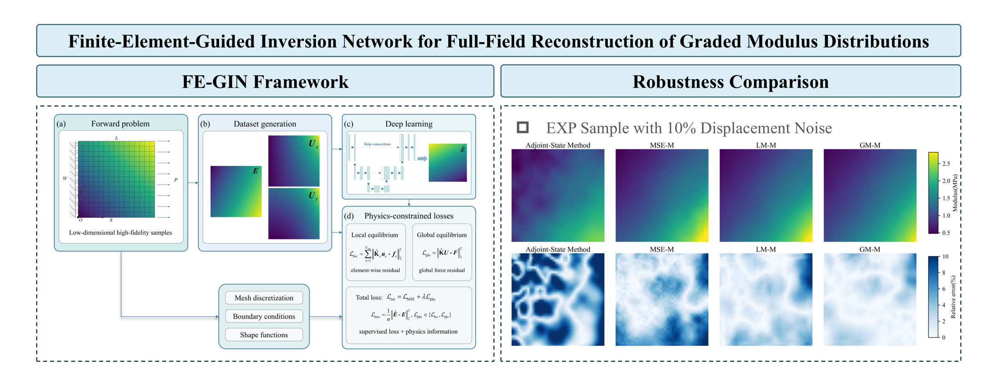

Modulus reconstruction · 2026
Finite-Element-Guided Inversion Network
FE-GIN adds local and global weak-form equilibrium losses to U-Net training. The model uses a full-field displacement measurement to reconstruct the spatial distribution of Young’s modulus.
Against an iterative adjoint-state baseline using the same forward model, FE-GIN had lower reconstruction errors for the tested bilinear and exponential fields and comparable accuracy for the random-field case. After training, reconstruction takes a single forward pass.
